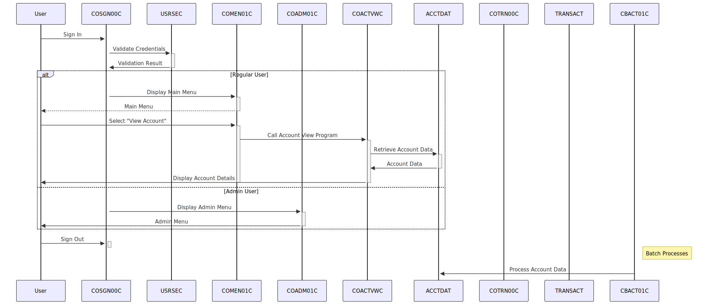

Gerado em: 1º de outubro de 2024
Título: CardDemo: Um Sistema de Gerenciamento de Cartão de Crédito Baseado em COBOL
Sumário:
O aplicativo CardDemo é um sistema legado implementado em COBOL, projetado para gerenciar vários aspectos das operações de cartão de crédito. Ele utiliza o CICS para processamento de transações e o VSAM para armazenamento de dados. O aplicativo possui uma interface orientada por menus, permitindo que os usuários executem ações como consultas de contas, visualização de transações, gerenciamento de cartão de crédito e administração de usuários. Processos em lote são empregados para tarefas como cálculo de juros e geração de relatórios.
Fluxo de trabalho:
- Autenticação do Usuário (COSGN00C): Um usuário fornece credenciais (ID de usuário e senha). O sistema valida as credenciais em relação ao arquivo
USRSEC.
- Exibição do Menu: Com base na função do usuário (Regular ou Admin), o menu principal (COMEN01C) ou o menu de administração (COADM01C) é exibido.
- Seleção do Usuário: O usuário escolhe uma opção do menu, que corresponde a uma funcionalidade específica (por exemplo, visualização de conta, lista de transações, adicionar usuário).
- Execução do Programa: A opção de menu selecionada aciona a execução de um programa COBOL correspondente (por exemplo, COACTVWC para visualização de conta, COTRN00C para lista de transações).
- Acesso a Dados: O programa interage com arquivos VSAM (por exemplo,
ACCTDAT, CARDDAT, TRANSACT) para recuperar ou atualizar dados conforme necessário.
- Exibição na Tela: O programa apresenta resultados ou solicita entrada usando mapas BMS do CICS, interagindo com o usuário por meio de uma interface semelhante a um terminal.
- Processamento em Lote: Programas em lote separados (por exemplo, CBACT01C, CBTRN02C) lidam com operações em massa como cálculo de juros, lançamento de transações e geração de relatórios.
Diagrama

–Made by “Smart Engineering” (by Compass.UOL)–